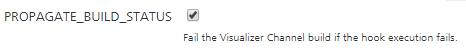

Custom Hooks for Iris jobs
Custom Hooks are custom pipelines that run at certain stages of the build flow in App Factory. You can define a custom logic as an Ant script or a Maven script.
To access Custom Hooks for Iris, navigate to the Custom Hooks sub-folder from the Iris folder of your project.

The Custom Hooks Management Console opens when you click the Custom Hooks folder.

Custom Hooks Management Console
Important: To run custom hooks, make sure that you have a custom hook archive. For more information, refer to Custom Hooks.
The Custom Hooks Management Console is a dashboard that you can use to manage your Custom Hooks. The console shows Hook Points that specify the stages at which the parent job (buildIrisApp) runs the given hooks.
There are three hook points, or stages, in the build flow.
- Pre-Build - Runs the Custom Hooks after the initiation of the CI process and before the Build process.
- Post-Build - Runs the Custom Hooks after the Build process and before the Test process.
- Post-Test - Runs the Custom Hooks after the Test process and before the Deployment process.

Creating a Custom Hook
- On the Custom Hooks Management Console, for the stage at which you want to run your Custom Hook, click Upload. The _createCustom Hook page opens.

-
Configure the parameters that are required to create a custom hook. For more information about the parameters, refer to the following table.
Parameter Description HOOK_NAME
Specifies the name that is displayed in the respective hook point.
Specifies the channel on which you want to run your Custom Hook. This includes both Native and SPA channels.
The Hook Channel parameter is set to ALL by default.

The IPA_STAGE for iOS platforms is the stage that generates the KAR file for iOS builds. At this stage, you can include iOS specific hooks, such as hooks for Xcode settings.
Note: Currently, you can only select one Hook Channel. If you want to run the same hook for multiple channels, you need to create multiple Custom Hooks with the same Hook Archive.
Specifies the type of script you want to run for the Custom Hook.
You can run an Ant script or a Maven script. The Build Action parameter is set to Execute Ant by default.

Specifies the archive file for the Custom Hook. For more information, refer to Custom Hooks.
To upload an archive file, click Choose File, and then select the custom hook zip file from the file explorer.

This text field specifies the arguments you want to pass to the Custom Hook Script. These arguments are specific the targets or goals for the script. If you leave the Script Arguments empty, the Custom Hook script will only execute the default goals.

Note: The arguments must be separated by using space, and must be in the order in which you want to execute them.
This check-box specifies whether the parent job should fail if the Custom Hook execution fails. This check-box is enabled by default.

- After you configure the parameters, click Build.
Note: For information on Environment Specific Variables in VoltMX Iris App, click here.
Configuring Custom Hooks
After you build the Custom Hooks, you can configure them from the Custom Hooks Management Console. You can add upto five Custom Hooks in every stage.

Any Custom Hook that you create is set disabled by default. You need to manually enable the hooks from the Console to run them during the build process.
You can perform the following tasks from the Custom Hooks Management Console.
- You can enable a hook by clicking the tick icon.
- You can edit a Custom Hook by clicking the Edit icon.
- You can disable an enabled Custom Hook by clicking the Disable icon.
- You can delete a disabled hook by clicking the bin icon.
- If you delete a Custom Hook from the console, it will be deleted permanently.
- You can only delete disabled hooks. To delete an enabled hook, you need to disable the hook first.

- You can drag and drop the enabled hooks to change their order of execution.

Note: The Edit and Disable buttons are displayed when you hover your cursor over a Custom Hook.

Editing a Custom Hook
To edit a custom hook from the Custom Hook Management Console, click the edit icon for the Custom Hook that you want to update. The _updateCustom Hook page opens
You can configure the parameters based on your requirements. For more information about the parameters, refer to Creating a Custom Hook.

Enabling Custom Hooks in Iris Jobs
To run Custom Hooks as part of the buildIrisApp job, enable the RUN_CUSTOM_HOOKS build parameter.

If you disable RUN_CUSTOM_HOOKS in the build parameters, the buildIrisApp job will not run any Custom Hooks. You can choose which Custom Hooks to run from the Custom Hooks Management Console.
Custom Hook Stages in Stage View
When you enable a Custom Hook in a parent job, the Custom Hook stages also show up in the parent job’s Stage View.

If you enabled PROPAGATE_BUILD_STATUS in the Hook Parameters and your Custom Hook fails to execute, then the you will see a failure message in the parent job’s stage view.